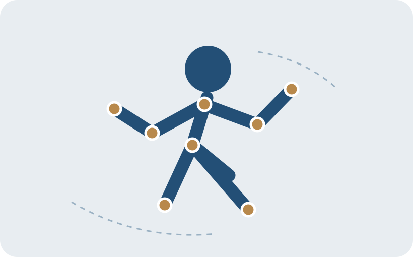

Learn
Introduce a dance with context and a clear movement reference.
Case Study 02 / Cultural technology · AI
A project bringing Bhutanese traditional dance learning into a digital, AI-oriented experience.

01 / Overview
A project bringing Bhutanese traditional dance learning into a digital, AI-oriented experience.
What this demonstrates: Connects AI concepts with a local educational use case and culturally informed interface design.
02 / Context
Traditional dance depends on movement, timing and cultural context. An online learning tool must help people practice without reducing the dance to a generic motion-scoring exercise.
Support accessible practice while respecting the knowledge and cultural meaning of Bhutanese dance.
03 / Reasoning
The following three-part structure describes a defensible development and evaluation path for this project.
Introduce a dance with context and a clear movement reference.
Help learners follow a structured, repeatable practice routine.
Explore feedback or guided comparison as an AI-assisted feature; validate it with practitioners.
04 / Model
This simplified flow explains the key idea without asserting undocumented implementation details.
05 / Judgment
Authentic references and review by knowledgeable practitioners are more important than a visually impressive demo.
Different styles and individual movement differences should not be mistaken for bad performance.
06 / Verification
To turn this portfolio page into a rigorous account of completed engineering work, the following details still need first-hand documentation.
Have project screenshots, GitHub repositories, supervisor feedback or evaluation tables? Add those to this case study when available.